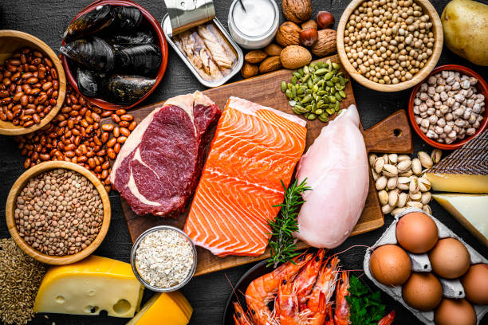
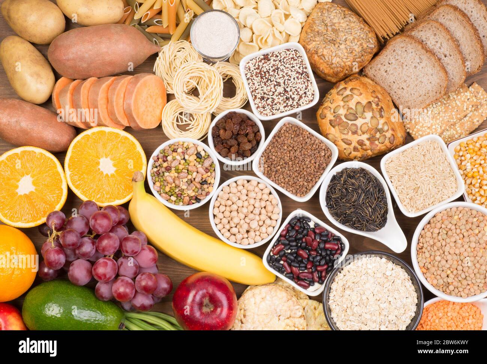
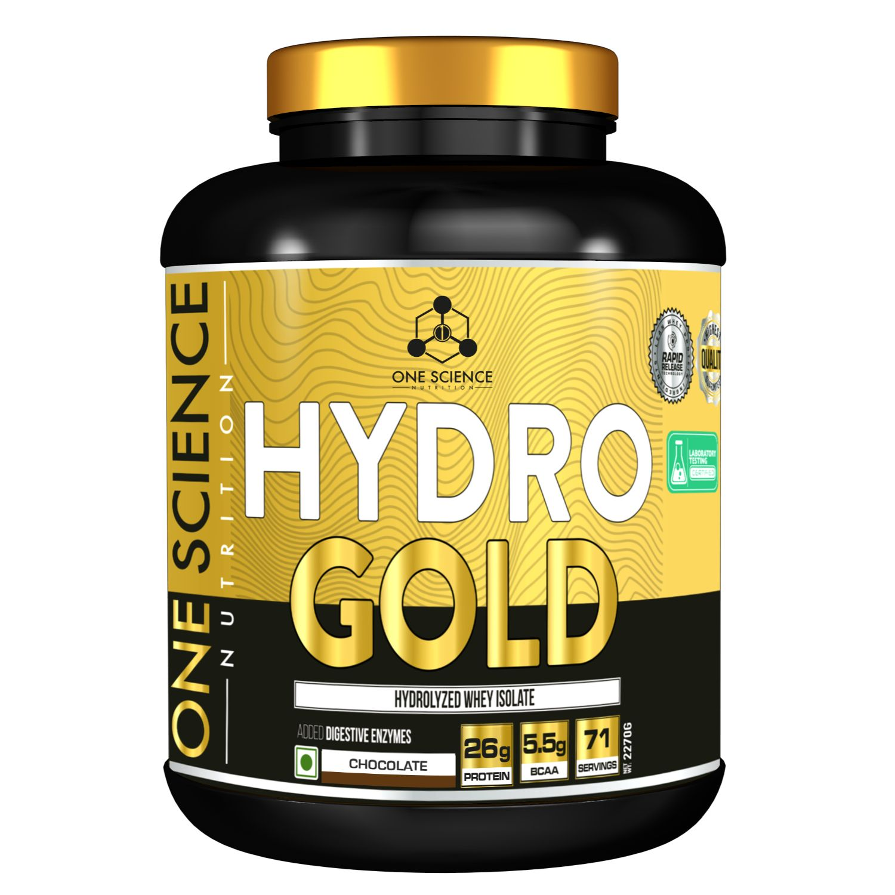

Macronutrients And Their Role in Fitness
PROTEINS
Proteins are made up of amino acids, which repair muscle fibers
that break down during exercise, thus supporting muscle growth.
Sources of Protein: Include lean meats (chicken, turkey), fish, eggs, dairy (yogurt, milk),
and plant-based proteins like lentils, beans, and tofu for vegetarians.
Carbohydrates
Fueling Your Workout: Carbohydrates are the primary source of energy, stored as glycogen
in muscles, which powers the body during intense workouts.
Good Carbs vs. Bad Carbs: Explain complex carbohydrates (whole grains, oats, sweet potatoes)
that provide lasting energy vs. simple sugars that can lead to energy crashes
Fats

Healthy Fats and Their Importance: Fats are essential for hormone production, including testosterone,
which supports muscle growth and recovery.
Sources of Healthy Fats: Avocados, nuts, seeds, olive oil, and fatty fish (like salmon)
are excellent sources of unsaturated fats that can support heart health and brain function
Supplements for Gym Nutrition
 Protein Powder: Provides a convenient way to meet daily protein needs. Types include
whey (fast-digesting), casein (slow-digesting), and plant-based (pea, rice) options.
Creatine: Enhances strength and muscle mass by supporting ATP production,
which powers short bursts of high-intensity activity